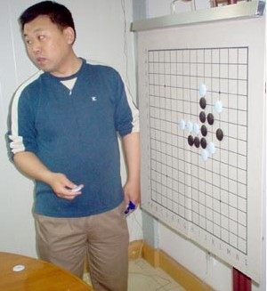

李洪斌简介

李洪斌：上海第一代棋手、上海围棋协会五子棋委员会（筹）主要负责人、中华连珠网常务理事。 棋风以刚猛为主，计算力强，实战经验丰富，有“快刀棋魔”美誉。涉猎面广，对各种开局有深入研究，其中以松月一打必胜和寒星一打必胜的发现和研究最为著名，是国内外松月、寒星研究专家之一，对推动五子棋技术发展作出贡献。此外，也擅长丘.斜月、云.雨月等。
李洪斌联系及交流方式：李洪斌百度博客 QQ：40222106
主要战绩
1995年，获上海“上文杯”大赛季军。
1997年10月，获首届上海“友情杯”邀请赛亚军。
1998年1月，获首届上海“团结杯”十强赛冠军；3月，参加北京地区比赛，作为唯一打进A组的外省市选手获第7名；11月，获第二届“团结杯”赛第5名。
2001年10月，获2001“经纬杯”南北十强赛第4名；12月，在台湾网站设擂接受台湾棋手为期1月的挑战，最后以58：0在台湾引起轰动，期间先后战胜台湾五子棋协会排名前二位棋手，包括在第7届世界杯赛中获A组第10名的林圣闵五段。
2002年5月，获首届“经纬杯”上海名人邀请赛冠军。
2004年5月，获第二届上海名人邀请赛A组季军。
2005年3月，获“弹指啸风云 群星耀九州” 互联星空休闲游戏大赛五子棋决赛亚军；10月，获 2005全国电子竞技运动会(CEG)休闲类比赛五子棋东南赛区亚军，11月，获第二届上海联赛秋季赛暨第四届“团结杯”预选赛冠军；12月，获第二届CVG大赛五子棋总决赛亚军。
2006年1月，任“上海―塔林”迎新年网络赛上海队主将；3月，获第四届上海名人邀请赛第8名；7月，获“上海―爱沙尼亚”锦标赛第7名。
2008年6月，获第二届全国团体赛亚军。
战绩资料分别来自中国五子棋网跟中华连珠网。
重赏之下，必有勇夫
目标１０威望！［ 被感动的人 于 2011-7-17 13:16:00 时花20金币送鲜花一朵］
 李老师简直就是最刚强的战士。妄自揣测下，月斜。。很可能就是这位战士。。无论对否，向李老师致敬~~
李老师简直就是最刚强的战士。妄自揣测下，月斜。。很可能就是这位战士。。无论对否，向李老师致敬~~特别关注：
1、凡本站内有的资料，汇总时一律选用本站链接；
2、凡本站内没有的资料，可以选择有价值的转来本站，每帖1威望；
3、汇总时请特别关注内容分为哪几部分和汇总格式。
［此帖子已被 被感动的人 在 2011-7-17 13:18:49 编辑过］
 10贴不就是10威望,比做总汇容易的多.
10贴不就是10威望,比做总汇容易的多.
 我的格式有其独特性.
我的格式有其独特性.
［ 被感动的人 于 2011-7-17 13:46:34 时花20金币送鲜花一朵］
李洪斌：上海第一代棋手、上海围棋协会五子棋委员会（筹）主要负责人、中华连珠网常务理事。 棋风以刚猛为主，计算力强，实战经验丰富，有“快刀棋魔”美誉。涉猎面广，对各种开局有深入研究，其中以松月一打必胜和寒星一打必胜的发现和研究最为著名，是国内外松月、寒星研究专家之一，对推动五子棋技术发展作出贡献。此外，也擅长丘.斜月、云.雨月等。
李洪斌联系及交流方式：李洪斌百度博客 QQ：40222106
主要战绩
1995年，获上海“上文杯”大赛季军。
1997年10月，获首届上海“友情杯”邀请赛亚军。
1998年1月，获首届上海“团结杯”十强赛冠军；3月，参加北京地区比赛，作为唯一打进A组的外省市选手获第7名；11月，获第二届“团结杯”赛第5名。
2001年10月，获2001“经纬杯”南北十强赛第4名；12月，在台湾网站设擂接受台湾棋手为期1月的挑战，最后以58：0在台湾引起轰动，期间先后战胜台湾五子棋协会排名前二位棋手，包括在第7届世界杯赛中获A组第10名的林圣闵五段。
2002年5月，获首届“经纬杯”上海名人邀请赛冠军。
2004年5月，获第二届上海名人邀请赛A组季军。
2005年3月，获“弹指啸风云 群星耀九州” 互联星空休闲游戏大赛五子棋决赛亚军；10月，获 2005全国电子竞技运动会(CEG)休闲类比赛五子棋东南赛区亚军，11月，获第二届上海联赛秋季赛暨第四届“团结杯”预选赛冠军；12月，获第二届CVG大赛五子棋总决赛亚军。
2006年1月，任“上海―塔林”迎新年网络赛上海队主将；3月，获第四届上海名人邀请赛第8名；7月，获“上海―爱沙尼亚”锦标赛第7名。
2008年6月，获第二届全国团体赛亚军。
战绩资料分别来自中国五子棋网跟中华连珠网。
by:web版  IP：
已记录
IP：
已记录
 plagiarism
plagiarism引用：
原文由 踵酃 发表于 2011-7-17 13:48:18 :
 我只是把你搜集来的内容修改了一下格式上的东西，所有权还是你的哇~再给大家做个样本而已。
我只是把你搜集来的内容修改了一下格式上的东西，所有权还是你的哇~再给大家做个样本而已。［ 踵酃 于 2011-7-17 19:36:21 时花20金币送鲜花一朵］
引用：同猜为此ID。。求证。。
原文由 gerbo 发表于 2011-7-17 12:35:36 :

乱猜能猜到？
［ 蓝天蓝 于 2011-7-18 11:18:03 时花20金币送鲜花一朵］
［ 以和为贵 于 2011-7-19 7:58:57 时花20金币送鲜花一朵］
李老师 必须顶~~~！